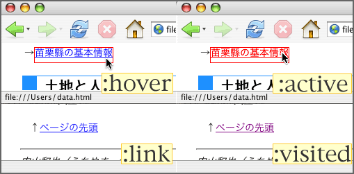

ハイパーリンクを示す〈アンカー要素〉には、『まだ利用していないリンク』や『すでに利用したリンク』などの性質の違いがある。このような性質の違いをアンカーテキストanchor textの表示に反映させるためには、「疑似クラス」pseudo-classを用いる必要がある。
アンカー要素に対する疑似要素
疑似クラスは、HTML文書の論理構造には存在せず、文書の利用状態の中に存在するものである。
〈アンカー要素〉に対しては、以下のような疑似クラスが利用される。
- :link
- ユーザエージェントuser agentの履歴historyにないURLを指すアンカー要素
- :visited
- ユーザエージェントの履歴にあるURLを指すアンカー要素
- :active
- ユーザuserが選択している要素
- :hover
- マウスポインタmouse pointerなどがそのうえにある要素
- :focus
- キーボードの［tabキー］などでフォーカスfocusが与えられた要素
このうち、「:link」「:visited」以外の疑似要素は、〈アンカー要素〉以外にも利用できる。
疑似クラスへのスタイルの指定
疑似クラスへのスタイルの指定は、次のようになる。
要素名:疑似クラス名 {プロパティ名: 値 ;}
〈アンカー要素〉のうち「ユーザが選択している要素」の表示を変更するには、次のように書く。
a:active {color: red ;}
この例では、アンカーテキストをクリックしたときなどにテキストが赤色になる。
表示見本：
ページの先頭にジャンプ
a:hover {background-color: yellow ;}
この例では、アンカーテキストのうえにマウスポインタをのせたときなどにテキストの背景色が黄色になる。
表示見本：
ページの先頭にジャンプ
実際にアンカー要素の表示を変更する
疑似クラスを利用して〈アンカー要素〉の表示を自由に変更してみよう。
〈アンカー要素〉の表示を変更するときには、次の点に注意する。
- 背景色を指定する場合は、文字色との組み合わせに注意する（→文字の色と背景の色を変更に関する注意）
- 「:link」と「:visited」には異なる文字色を指定する方が良い
- アンカーテキストには下線をつける方が良い（→テキストの装飾を指定する）

a {text-decoration: underline ;}
a:link {color: blue ;}
a:visited {color: purple ;}
a:active {color: red ;}
a:hover {border: thin solid red ;}